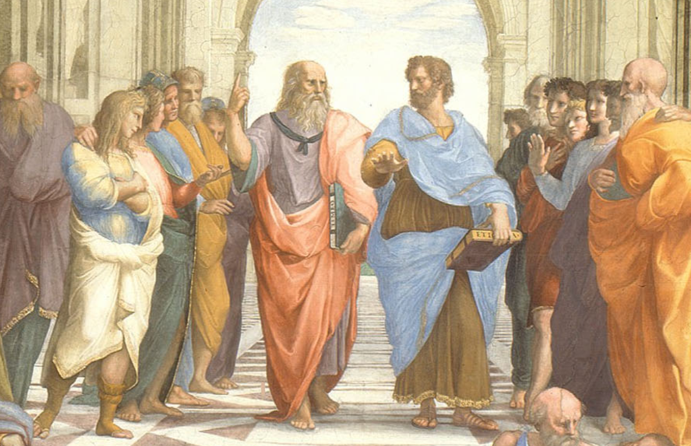
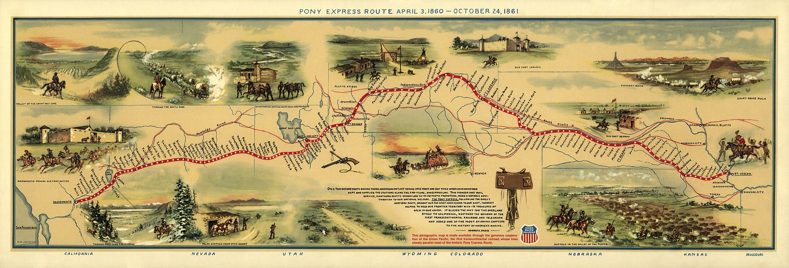
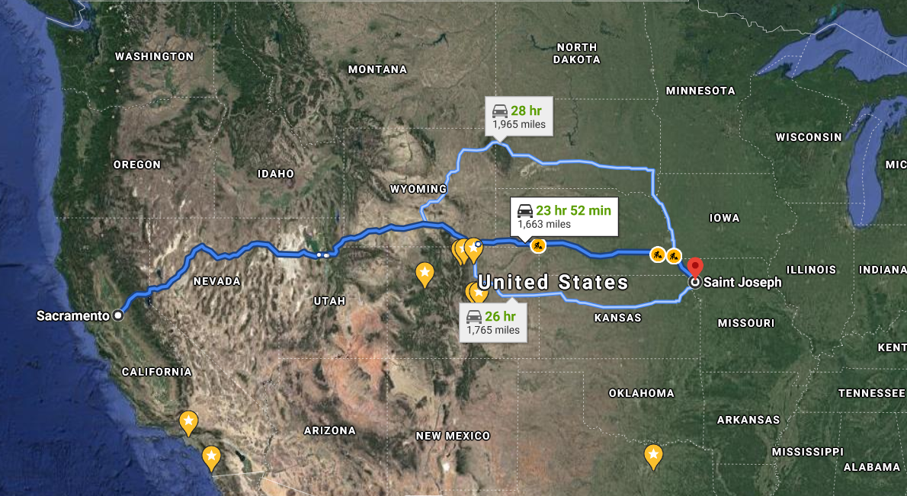
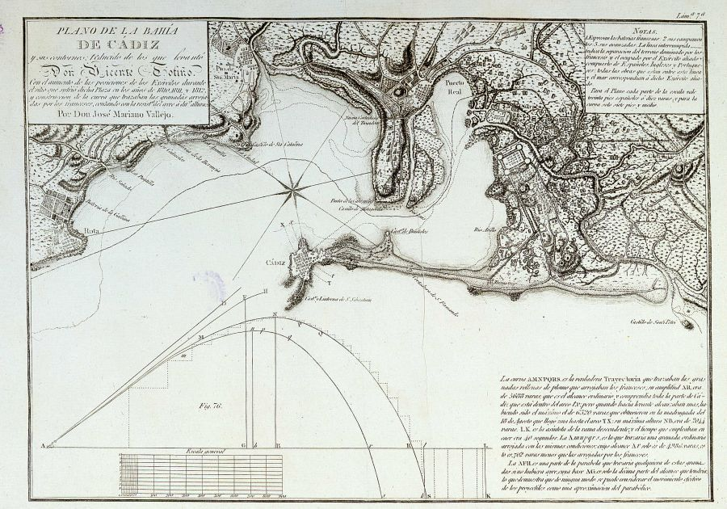

끊어져서는 안되는 것 - 나폴레옹의 약점
게시: 2021-03-29T06:30:45+09:00
여태까지 보셨듯이, 모스크바에 주둔한 그랑다르메의 상태는 당장 큰 문제는 없었습니다. 식량이나 숙소 문제도 그렇게 나쁘지는 않았습니다. 따라서 나폴레옹의 공언대로, 그랑다르메가 모스크바에서 겨울을 편히 지낸 뒤 봄이 되면 상트 페체르부르그로 알렉산드르 사냥을 떠나는 것은 그다지 나쁜 계획처럼 보이지는 않았습니다. 그리고 일부 부족하거나 불안한 점이 있다고 하더라도 장교들이건 병사들이건 큰 걱정을 하지는 않았습니다. 그들과 함께 나폴레옹이 있었거든요! 기병대 군마들이 픽픽 쓰러지는 모습을 마음 아파하던 제5 폴란드 기마 라이플 연대의 중위 뎀빈스키(Henryk Dembinski)도 자기들끼리 향후 전황에 대해 우울한 이야기를 하다가도 결론은 언제나 '나폴레옹께서 다 알아서 하실 것'이라는 신뢰의 확인으로 끝났다고 회고했습니다. 당시 그 어떤 인간이 나폴레옹보다 더 정확한 판단을 내릴 수 있다고 생각했겠습니까? 오도아르(Faintin des Odoards) 대위도 이렇게 기록을 남겼습니다. "우리의 이런 모든 잡념에도 불구하고, 우리는 전혀 불안해하지 않았다. 나폴레옹이 우리와 함께 거기 있었기 때문이었다."
그렇게 사람들이 믿고 있던 나폴레옹도 한낱 인간에 불과했고, 인간의 특징 중 하나는 고립되어서는 살 수 없다는 것이었습니다. 나폴레옹이라는 천재가 이끄는 유럽의 강자 프랑스에게 약점이 있다면 바로 한 명의 인간에게 모든 정책을 의존한다는 것이었습니다. 플라톤은 스승 소크라테스를 죽인 아테네의 민주주의를 못마땅하게 생각했고 완벽한 철인(쇠로 만든 사람이 아니라 철학하는 사람)이 통치하는 국가를 이상향으로 보았다지만, 일단 나폴레옹은 완벽한 철인이 아니었고 특히 당시 유럽의 심장부인 파리를 자주 비웠다는 치명적인 단점이 있었습니다.

(라파엘의 명작 '아테네 학당'에서 한 가운데를 점유하는 두 명은 왼쪽이 플라톤, 오른쪽이 아리스토텔레스입니다. 특히 저 플라톤의 얼굴은 당대의 천재인 레오나르도 다 빈치를 모델로 했습니다.) 나폴레옹은 황위 등극 이후, 스페인부터 동부 폴란드까지 어느 곳엘 가든 파리와의 교통로 확보를 무척 중요시했습니다. 영국 역사가 슬로안(Sloan)에 따르면 나폴레옹의 제국은 문어 같은 두족류라서, 파리를 점거하는 자가 전체 제국을 다스리는 구조였습니다. 나폴레옹은 파리의 두뇌 역할을 했는데, 두뇌가 파리를 떠나 유럽 구석구석을 돌아다니는 상태는 매우 불안정한 것이었습니다. 따라서 그 어떤 촌구석에서라도 매일 파리와 서신을 주고 받는 것이 그의 독재 권력 유지에 필수적이었습니다. 보통 완전무장한 병사는 잘 닦인 도로가 있다면 하루에 32km 걷는 것이 표준이었습니다. 그러나 실제로는 도로 사정도 좋지 않고 식량을 구하는 활동도 따로 해야 했으므로 20km 정도를 전진하는 것이 보통이었지요. 물론 필요하다면 하루에 50km 넘게 행군하는 경우도 꽤 많았습니다. 파리와 나폴레옹을 연결해주는 통신 수단이었던 파발마(불어로는 estafette)는 하루에 얼마나 달릴 수 있었을까요? 의외로 네발 달린 짐승보다 인간의 지구력이 더 좋다고 하더니 정말 사람보다 딱히 더 멀리 가지는 않습니다. 장거리 여행을 할 때 말의 건강을 생각한다면 보통 하루에 32km~48km 이상을 달리게 해서는 안되었습니다. 군대가 행군할 때 도로 사정이 나쁘면 기병대를 보병대가 앞질러 가는 경우가 종종 있었다더니 그게 과장이 아닌 것입니다.
(석기 시대 인간의 사냥 방법은 그냥 손에 짱돌 하나 들고 무작정 사슴이나 토끼를 쫓아가는 거라고 합니다. 당연히 사슴이나 토끼가 사람보다 훨씬 빠르지만, 지구력은 인간이 훨씬 좋았기 때문에 목표를 놓치지 않고 하루종일 끝까지 쫓아가면 결국 지친 사슴이나 토끼를 돌로 쳐죽일 수 있답니다. 말도 한번에 달릴 수 있는 거리는 보통 3~4km에 불과합니다.) 그러나 인간의 잔혹함은 말이 감당할 수준을 훌쩍 뛰어넘었습니다. 앞에서도 언급했듯이, 일반 병사들의 우편마차는 파리에서 모스크바까지 약 2,800km의 거리를 달리는데 40일이 걸렸으나 나폴레옹을 위한 파발마는 14일만에 주파해야 했습니다. 하루에 200km를 달리는 셈인데, 정상 주파 거리의 4배가 넘는 거리였습니다. 이렇게 달리기 위해서는 바꿔탈 말이 기다리고 있는 역참이 일정거리마다 있어야 했습니다. 그 적정거리는 얼마나 되었을까요? 프랑스군이 파리-모스크바 간의 통신로에 얼마나 많은 역참을 두고 있었는지는 기록에서 찾이 못했습니다만, 참고할 기록이 있긴 합니다. 1860년대에 미국 서부 캘리포니아의 새크라멘토(Saramento)부터 미국 중부 미주리(Missouri)까지 운영되었던 조랑말 특급우편(Pony Express)의 기록입니다. 이 포니 익스프레스는 약 2,700km의 거리를 10일만에 주파했습니다. 나폴레옹의 파리-모스크바 파발마보다 더 좋은 기록입니다. 그러나 이 기록을 내기 위해서 그 도로변에는 일정한 간격으로 총 184곳의 역참이 있었고, 기수들은 평균 24km의 거리마다 말을 바꿔탔습니다. 나폴레옹의 파발마들도 이렇게 촘촘한 역참까지는 아니어도, 최소한의 역참 조직이 있어야 돌아갈 수 있는 조직이었습니다. 그리고 그런 말발굽에 나폴레옹 제국의 운명이 달려있었습니다.
 
(1860년대 운영된 포니 익스프레스의 경로입니다.) 그런데 10월 12일, 모스크바에서 파리로 가는 이 파발마 일행이 모스크바와 모즈하이스크(Mozhaisk) 사이에서 코삭 기병대에게 습격당하고 포로가 되는 사건이 벌어집니다. 여태까지 하루도 빼지 않고 매일 같이 오가던 나폴레옹의 파발마가 나포된 것은 이번이 처음이었습니다. 이것은 결코 우연한 사건이 아니었습니다. 바로 다음 날인 10월 13일, 이번에는 파리에서 모스크바로 오던 파발마 일행이 거의 모스크바 성문 앞에서 요격되었습니다. 특히 여기에는 프랑스군이 포위 공격 중이던 스페인 카디즈(Cadiz) 항구에서 전황 보고서를 들고 출발했던 페리에르(Dubois de Ferrières) 장군이 포함되어 있었는데, 페리에르 장군까지 속절없이 코삭들에게 끌려가버렸습니다. 이 모든 것은 프랑스군의 군마들이 하도 많이 죽어넘어지는 바람에 프랑스 기병대 병력이 극히 위축된 결과였습니다.

(1813년 스페인 서쪽 끝 카디즈의 지도입니다. 저렇게 바다로 쭉 튀어나온 가느다란 곶 끝에 카디즈 요새가 있었습니다. 제해권만 있다면 정말 난공불락의 천연 요새라고 할 수 있습니다. 덕분에 스페인 임시 정부는 끝끝내 프랑스군에 항복하지 않고 버틸 수 있었습니다.)
이건 단순히 편지 몇 장 빼앗기고 사람이 몇 죽었다는 정도의 보통 일이 아니었습니다. 당시 스페인에서는 이런 일이 부지기수로 일어나고 있었습니다만, 스페인과 모스크바는 이야기가 달랐습니다. 모스크바는 파리에서 너무 멀었고, 무엇보다 여기에는 나폴레옹이 있었습니다. 스페인에서의 통신 두절은 별 것 아니었습니다만, 이렇게 머나먼 모스크바에서 나폴레옹이 파리와의 통신이 끊어진다는 것은 제국의 두뇌가 마비된다는 것을 뜻했습니다. 특히 그 통신 두절이 단지 하루 이틀이 아니라 3~4개월간, 겨우내내 이어진다면 그 결과는 아무도 예측할 수 없었습니다. 영국군이 네덜란드에 다시 상륙할 수도 있었고, 웰링턴이 피레네 산맥을 넘을 수도 있었으며, 오스트리아 합스부르크 왕가가 또 반기를 들 수도 있었습니다. 무엇보다, 파리의 범같고 늑대같은 정적들이 무슨 일을 벌일지 짐작이 되지 않았습니다. 그리고 더 큰 일이 벌어졌습니다. 페리에르 장군의 피납 소식에 충격을 받은 나폴레옹의 눈에도, 창 밖에 10월 13일 그 해 모스크바의 첫 눈이 흩날리는 것이 보였습니다. '모든 것을 보고 계시고, 모든 것을 계산해두었으며, 모든 것을 통제 하에 두고 계실 것'이라고 병사들이 굳게 믿고 있던 나폴레옹에게도 공포라는 것이 엄습하는 순간이었습니다.
Source : 1812 Napoleon's Fatal March on Moscow by Adam Zamoyski
horsyplanet.com/how-long-can-a-horse-run/
en.wikipedia.org/wiki/Pony_Express
en.wikipedia.org/wiki/The_School_of_Athens